What’s being built in Mississauga?
Explore the buildings, neighbourhoods and transit lines changing the city.

Neighbourhoods
View all 20Transit
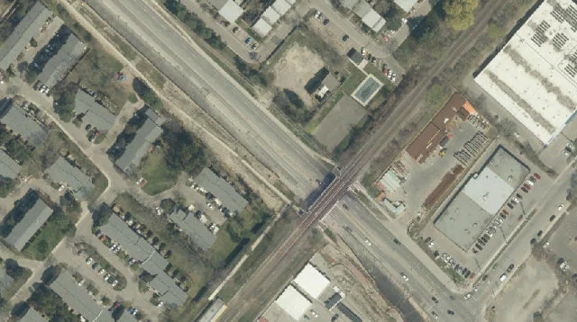
Hazel McCallion LineCooksville stop →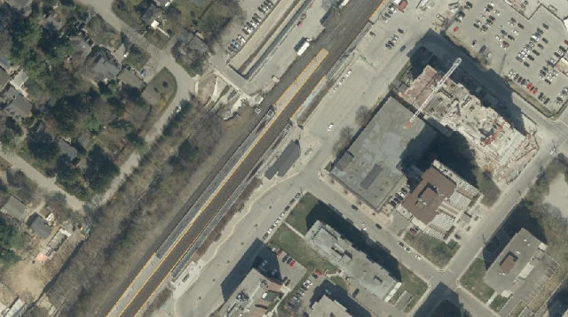
GO TransitPort Credit GO →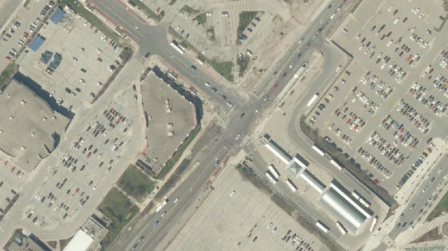
Mississauga TransitwayCity Centre Transit Terminal →2023 aerial imagery · © King’s Printer for Ontario, 2024
Building models
All buildings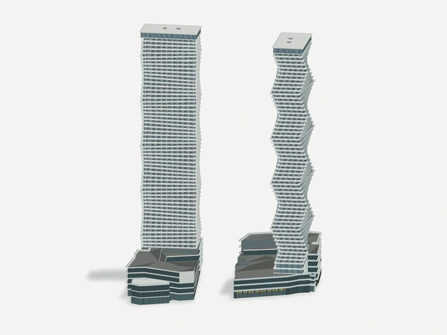
M City M1 and M2Downtown
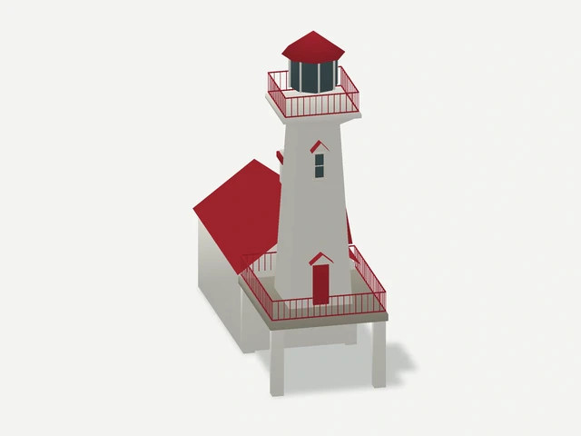
Port Credit LighthousePort Credit
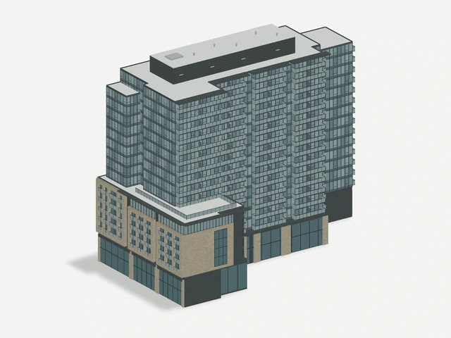
ArtformCooksville
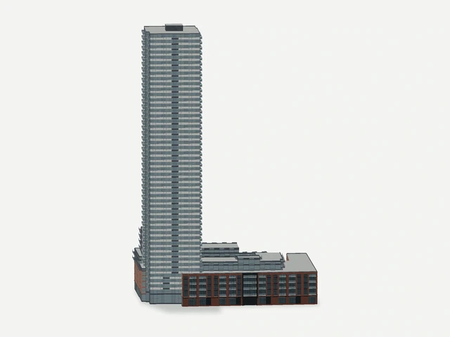
Avia 1Downtown
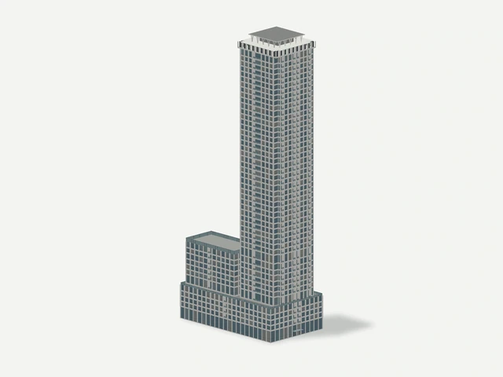
Oro at Edge TowersDowntown

M City M5Downtown
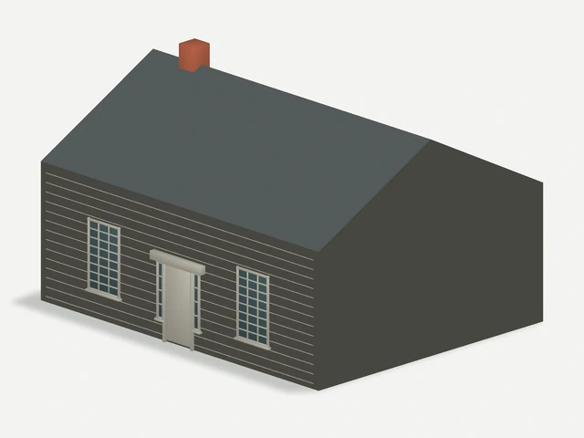
Leslie Log HouseStreetsville
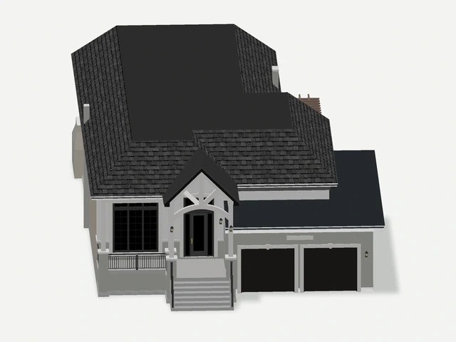
1422 Aldo DriveLorne Park · Aldo area

Bell Gairdner EstateClarkson
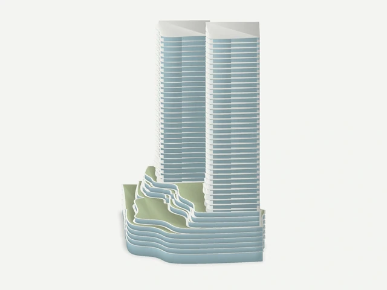
VoyaDowntown
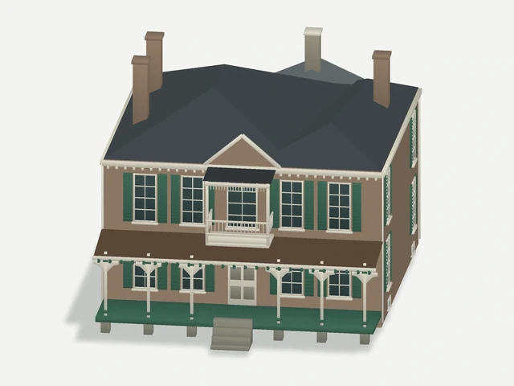
Benares HouseClarkson

6710 Maritz DriveHeartland & Gateway
Views of the city
Image gallery


The Mississauga atlas
City maps, neighbourhood views and building studies in one illustrated guide.
Atlas and downloads

Latest updates
All updatesWhy I made this
I wanted to see how the buildings in planning drawings would fit together. I model them alongside the streets and landmarks already here, so you can see what might change in your neighbourhood.
About Daniel